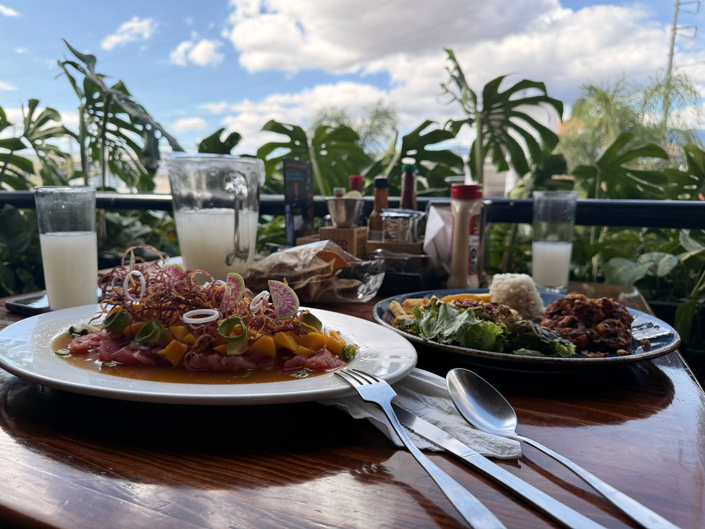

commit 0018 Date: 04 Apr 2026 🟡 Un Día Para Recordar 🟢 Git Message feat: stepped out of our routine ⚪ README / Story # Un Día Para Recordar Hay días que simplemente se disfrutan. Este fue uno de ellos. Nos vimos desde temprano y comenzamos el día con un masaje en pareja. Qué rico masaje. Definitivamente necesitamos otro. Después fuimos a comer a Coco Beach. Pedimos un sashimi. Estaba rico, aunque hasta ese momento ninguno había logrado superar el que probamos en Punta Zicatela. Después de comer salimos a caminar. Nos tomamos algunas fotografías, seguimos recorriendo el lugar y nos tomamos un café mientras hacíamos tiempo. Cuando comenzó a oscurecer nos fuimos al Parque El Llano para encontrarnos con nuestros amigos. Por un momento pensamos que nos habían dejado plantados. Así que aprovechamos para comprar algo de comer. Yo pedí un elote. Tú, un esquite. Y justo cuando menos lo esperábamos, nos encontramos con ellos. Nos quedamos a bailar. Había música, gente bailando y ese ambiente de salsa y bachata que se arma en el parque. Bailamos un rato y disfrutamos la noche. Al terminar nos fuimos los cuatro a cenar. Platicamos de todo un poco y seguimos disfrutando la noche hasta que, sin darnos cuenta, el día llegó a su fin. Después nos fuimos a dormir a tu casa. Fue un día largo. También fue un día cansado. Pero salimos de nuestra rutina. Pasamos la mayor parte del día fuera de casa, hicimos cosas diferentes y simplemente dejamos que el día fluyera. Y creo que por eso... fue un día para recordar. 🟣 Developer Notes Routine successfully interrupted. Full-day adventure completed. Multiple activities successfully chained. New shared memories archived. 🟢 Impact on Project + Another full day together documented. + New experiences added to the archive. + Routine successfully broken. + "Un Día Para Recordar" unlocked. 🟢 Commit Status ✔ Completed ✔ Reviewed ✔ Ready for Release
🖼 Recuerdos

Sin cebolla no hay sashimi. (Por el sashimi) ya hasta le tomé cariño a la cebolla morada.

Un día largo, cansado, pero de esos que vale la pena recordar.

Nos tomamos algunas fotografías mientras el día seguía fluyendo.

Pensamos que nos habían dejado plantados... y terminamos bailando el social en la noche.
1 / 4
⬅ Regresar al Commit History